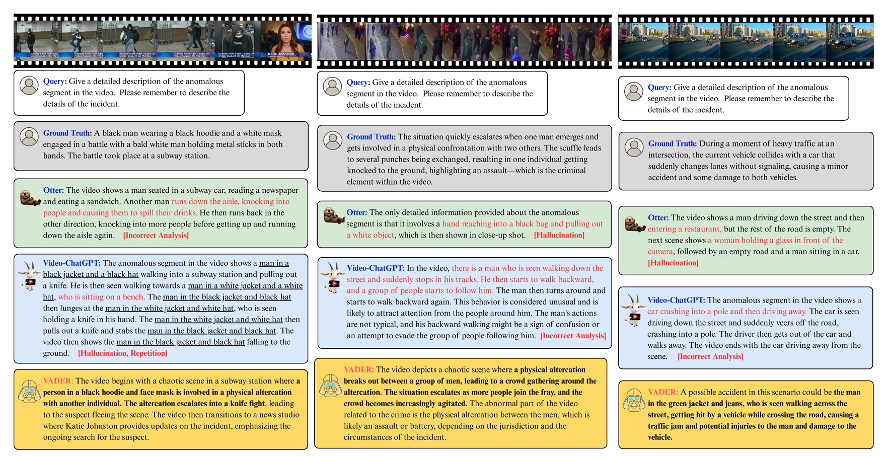

Video anomaly understanding (VAU) aims to provide detailed interpretation and semantic comprehension of anomalous events within videos, addressing limitations of traditional methods that focus solely on detecting and localizing anomalies. However, existing approaches often neglect the deeper causal relationships and interactions between objects, which are critical for understanding anomalous behaviors. In this paper, we propose VADER, an LLM-driven framework for Video Anomaly unDErstanding, which integrates keyframe object Relation features with visual cues to enhance anomaly comprehension from video. Specifically, VADER first applies an Anomaly Scorer to assign per-frame anomaly scores, followed by a ContextAwarE Sampling (CAES) strategy to capture the causal context of each anomalous event. A Relation Feature Extractor and a COntrastive Relation Encoder (CORE) jointly model dynamic object interactions, producing compact relational representations for downstream reasoning. These visual and relational cues are integrated with LLMs to generate detailed, causally grounded descriptions and support robust anomaly-related question answering. Experiments on multiple real-world VAU benchmarks demonstrate that VADER achieves strong results across anomaly description, explanation, and causal reasoning tasks, advancing the frontier of explainable video anomaly analysis.
Overview of our VADER framework. Given an input video, the Anomaly Scorer and Context-AwarE Sampling (CAES) identify keyframes for narrative-driven anomaly analysis. Visual and relational features are extracted and encoded, with dynamic relational patterns distilled by the COntrastive Relation Encoder (CORE). All cues are fused by a pretrained LLM for comprehensive video anomaly understanding. The right panel illustrates the relational branch, including temporal association, volatility mining, and contrastive token learning.
The descriptions generated by Otter and Video-ChatGPT contain hallucination or incorrect analysis. In contrast, VADER produces concise, contextually grounded, and causally coherent descriptions that accurately reflect the events and their underlying dynamics across various challenging cases.
@misc{cheng2025vadercausalvideoanomaly,
title={VADER: Towards Causal Video Anomaly Understanding with Relation-Aware Large Language Models},
author={Ying Cheng and Yu-Ho Lin and Min-Hung Chen and Fu-En Yang and Shang-Hong Lai},
year={2025},
eprint={2511.07299},
archivePrefix={arXiv},
primaryClass={cs.CV},
url={https://arxiv.org/abs/2511.07299},
}